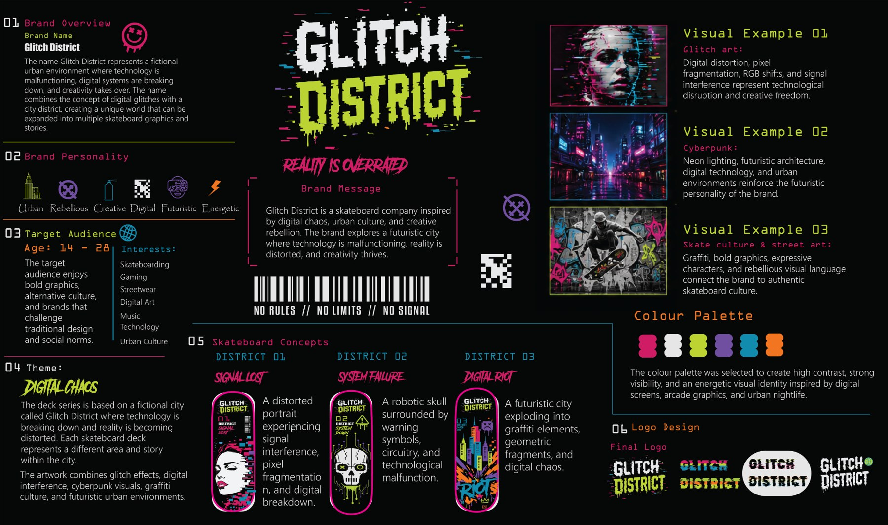
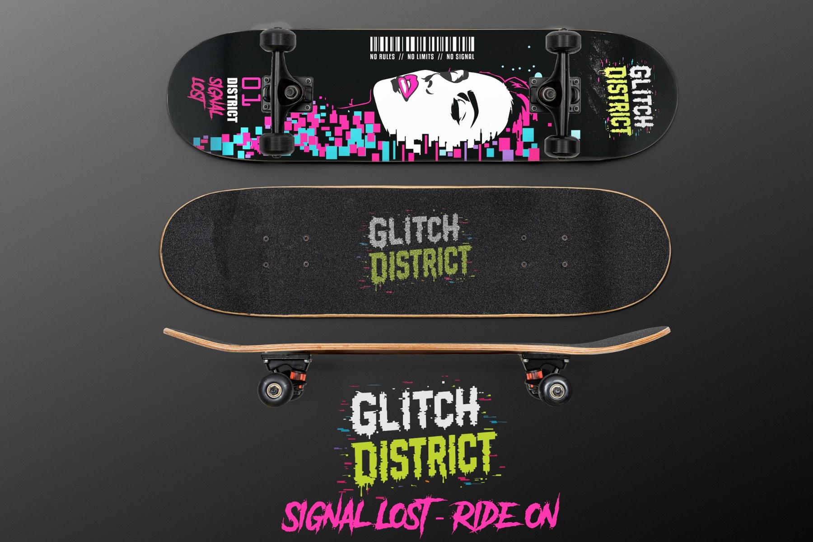
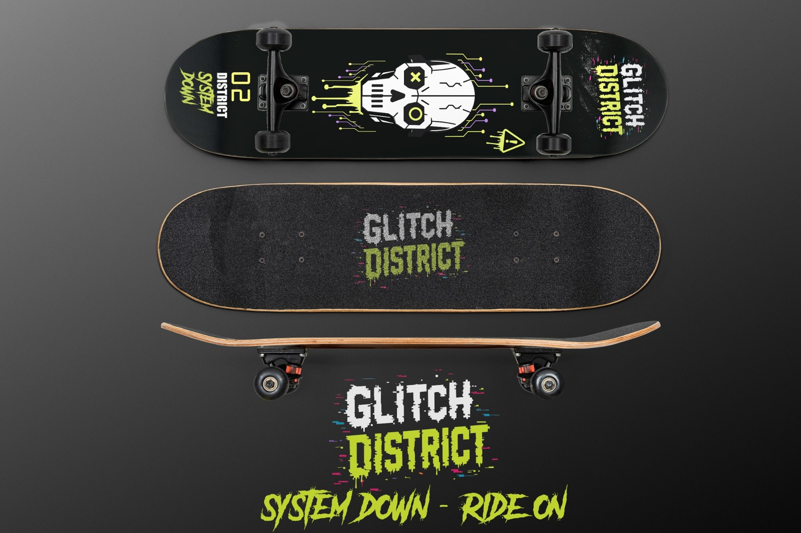

Glitch District
Reality is Overrated.
Project Brief
Glitch District is a fictional skateboard brand inspired by digital chaos, urban culture and creative rebellion. The concept imagines a futuristic city where technology is malfunctioning, reality is distorted and creativity takes over.
The goal was to build a recognizable brand world that could extend across multiple skateboard decks while giving each product its own story.

Audience & Positioning
The brand targets ages 14–28 with interests in skateboarding, gaming, streetwear, digital art, music, technology and urban culture. The visual direction was designed for an audience drawn to bold graphics, alternative culture and brands that challenge traditional design conventions.
Brand Personality
Urban, rebellious, creative, digital, futuristic and energetic.
Creative Direction
Glitch art, RGB shifts, pixel fragmentation, signal interference, cyberpunk environments, graffiti and street-art language combine into a high-energy identity called Digital Chaos.
Research & Brand System
The research board defined the fictional world, audience, brand personality, visual references, colour palette, logo direction and the concept for the three districts before the final deck artwork was developed.

The Three Districts
Each deck represents a different area and story within the same fictional city, allowing the collection to feel varied while staying visually connected.


Outcome
The final result is a three-deck collection built from one clear brand idea. Glitch District demonstrates how audience research, positioning and visual strategy can translate into distinct product graphics while maintaining a recognizable system across logo, typography, colour and art direction.